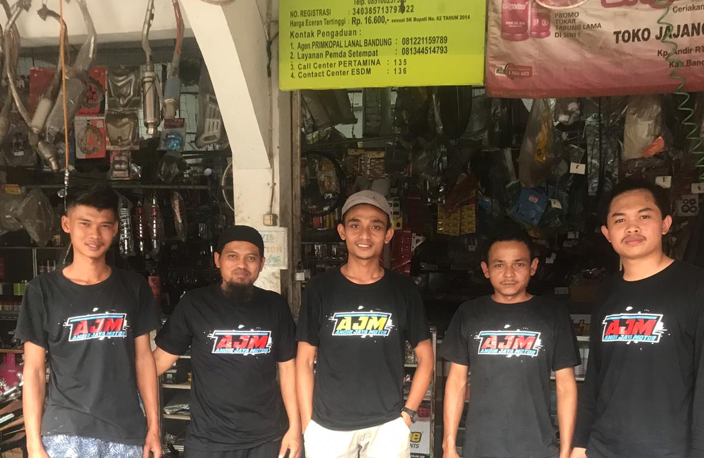
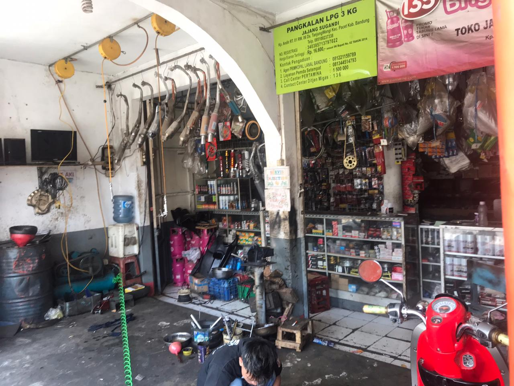
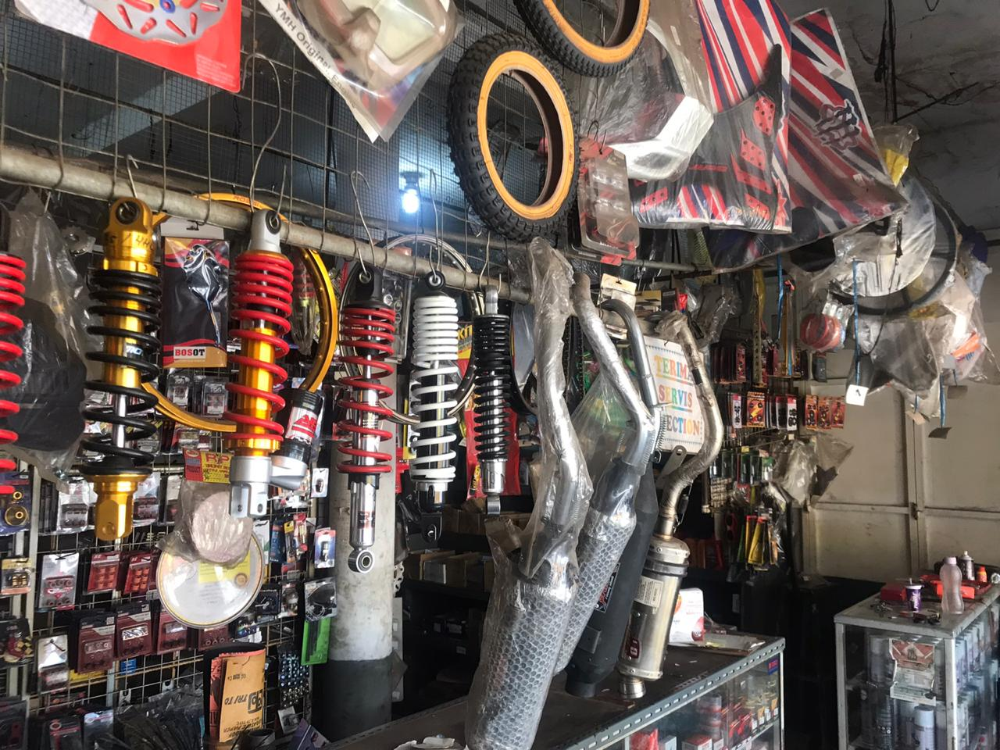
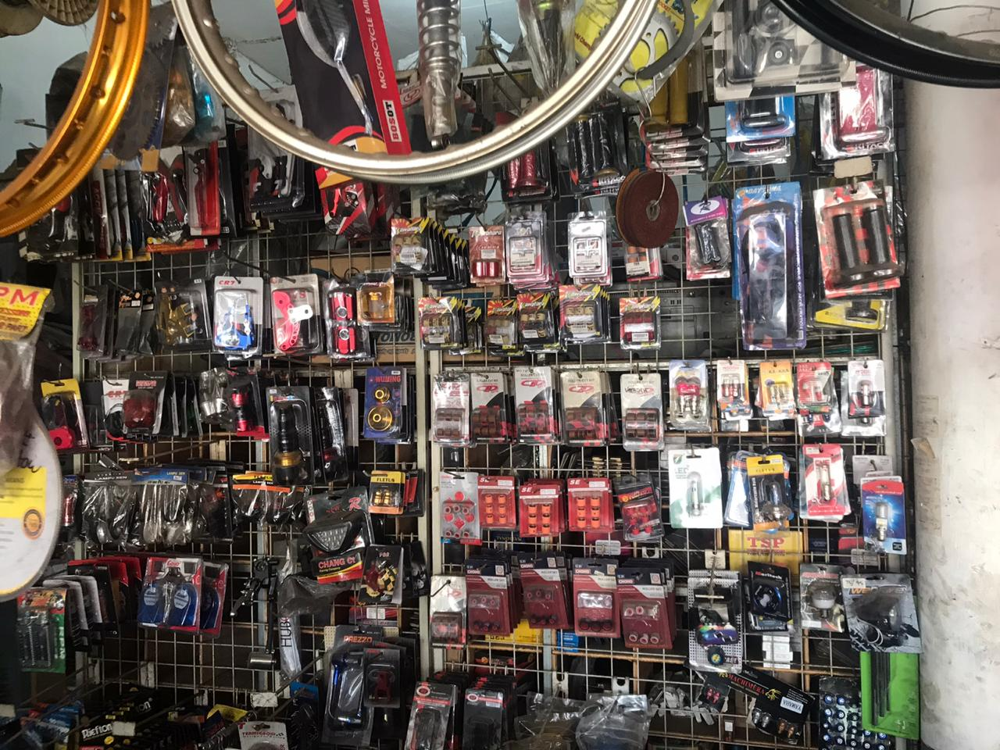
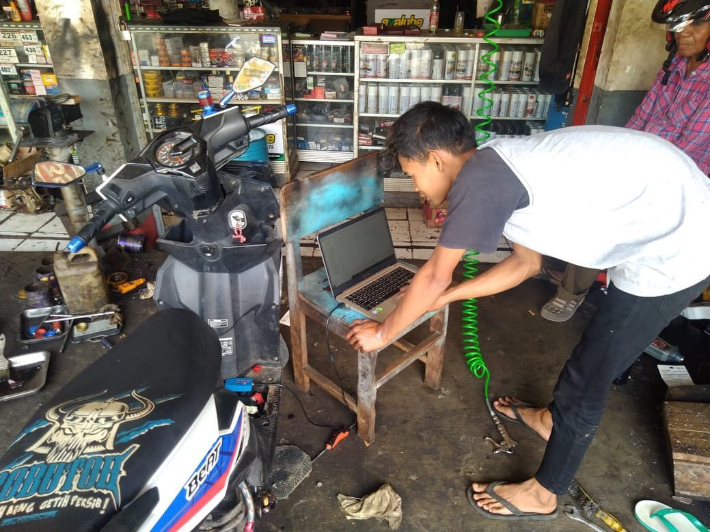
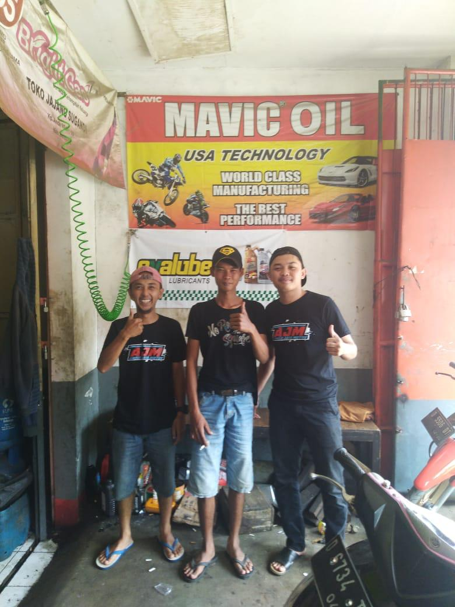

- ☠ HOME ☠
- PROFIL
- PRODUCT
- SERVICE
- GALERY
- CONTACT
ANDIR JAYA MOTOR
Selamat Datang di Bengkel Kami... Kami menyediakan berbagai macam Spareparts dan juga melayani Service kendaraan.
VISI
MISI
Bengkel Andir Jaya Motor berada di kawasan Kabupaten Bandung yang beralamat di Jl. Raya Lambur awi-majalaya No 121, Kp. Andir, Kel. Desa tanjung wangi, Kec. Pacet, Kab. Bandung.
Nama Andir Jaya Motor ini berasal dari nama daerah tempat bengkel tempat tersebut berada.
Pada mulanya bengkel Andir Jaya Motor dipegang langsung oleh pemilik nama bengkel yaitu Bapak Jajang, namun dengan kesibukan kerja Bapak Jajang di perusahaan Swasta membuat bengkel Andir Jaya Motor sedikit terganggu.
Sehingga perusahaan perbengkelan dipegang oleh anaknya sendiri dengan dibantu temannya dan kemudian bengkel dikembangkan mulai dari jumlah produk dagang yang diperbesar dan jasa service yang lebih kepada kenyamanan dan keamanan bagi kendaraan yang di service.
filter_1
BAN DALAM IRC BERMACAM UKURAN
filter_2 BAN LUAR IRC BERMACAM UKURAN
filter_4 BUSI
filter_5 KABEL REM
filter_6 KIT PASTE ODOL
filter_7 KLAKSON 12V (MR,HT)
filter_8 OLI CASTROL
filter_9 Dan Lain - Lain.
filter_2 BAN LUAR IRC BERMACAM UKURAN
filter_4 BUSI
filter_5 KABEL REM
filter_6 KIT PASTE ODOL
filter_7 KLAKSON 12V (MR,HT)
filter_8 OLI CASTROL
filter_9 Dan Lain - Lain.
filter_1
Jasa Service.
filter_2 Sparepart Lokal / Orisinil.
filter_3 Korek Mesin.
filter_4 Service Injeksi.
filter_5 Dan Lain - Lain.
filter_2 Sparepart Lokal / Orisinil.
filter_3 Korek Mesin.
filter_4 Service Injeksi.
filter_5 Dan Lain - Lain.

